Introduction
In my last blog article, I showed an example of how ‘data driven’ analytical approaches could be applied to traditional HR methodologies, by looking at applying statistical discriminant analysis to a traditional non quantitative approach to job classification.
My intent in that article, this one, and a few more to come is to try to show HR in a series of small vignettes that ‘data driven’ is indeed possible for HR. It is applicable to:
HR metrics reflecting people activity within our organizations
HR metrics reflecting HR operations
HR metrics reflecting deep embedding directly into our HR methodologies.
The last article and this one are intended to show examples of the last bullet point. (I still intend to write some blog articles on the first two as well). But the third bullet point demanded at least one more blog article because there are so many methods in statistics that focus on ‘prediction’ of classifications and categories.
In addition to discriminant analysis in my last article, I mentioned that another method was ‘decision trees’. Still another is random forests. And there are still more beyond that. What I would like to do in this article is show examples of decision trees and random forests. As a continuation of the theme from the last blog article, I will first show these in the statistical package R.
However I will in this article also show these two methods in software packages that don’t require ‘programming in code’ in R, but rather show a couple of more ‘menu driven’ tools that are out there to do this. So the outline of the remainder of this blog article will be demonstration of data driven job classification through:
Decision trees in R
Random forests in R
Decision trees in a web based menu driven solution on the internet called BigML
Random forests in Microsoft Azure Machine Learning
In demonstrating these, my intent again is NOT to provide a full manual or explanation or dissertation on the above. Each of the statistical methods and tools could be articles in and of themselves. The intent is to whet your appetite for ‘data driven’- so that you do further reading and research and study in this area and start applying these approaches to HR where your imagination takes you. I will only share as much detail as is necessary to get the ideas across.
What Are Decision Trees and Random Forests?
Decision trees and random forests are ‘data mining’ algorithms where the purpose of these algorithms or methods is ‘prediction’. Like discriminant analysis, we are trying to predict ‘something’. While decision trees can be used for both ‘regression’ purposes- predicting a continuous outcome, or classification purposes- a categorical outcome- the interest in this blog article is on the categorical outcome. We are interested in decision trees and random forests for ‘classification’- predicting a category. Let’s look into each of these in a little more detail.
Decision Trees
Decision tree algorithms attempt to figure out a systematic set of ‘rules’ based on patterns it sees in the a data population which can then be used to relatively consistently correctly categorize items that are not yet in that data population. The decision tree looks like an upside down tree- where the top is a root node, and for which there are subsequent ‘branch’ nodes that are further split by rules the algorithm has found in the data. And finally there are terminal nodes- points at which no further splits occur and a category has been predicted with a reasonable level of certainty. (There are books that define decision trees more formally – but I am trying to keep the description as simple as possible).
In any case, each node in the decision tree is a question, for which there are ‘splits’ with respect to the answers- something either being equal to something or less than or greater than something. This then leads to another ‘question’ or ‘rule’ which in turn has splits for answers. By following the questions (rules) and answering them based on the features in the observation- we eventually get to a prediction of a category- based on the features and categories of the ‘known’ population.
Similar to discriminant analysis- a ‘known’ population with ‘known’ categories and ‘known’ features is used as a base by the algorithms. When the analysis is done by the algorithm, the intent is to take new observations or records that are NOT in that original population and attempt to predict their category based on the features they evidence.
AND- similar to discriminant analysis- ‘the proof is in the pudding’. We judge the usefulness of the ‘data mining’ tool based on how ‘well’ it predicts. I mentioned in the last blog article, that we can apply these algorithms on the original data ‘initially’ to see how well the model predicts what it already knows outside of itself- ( i.e. the training data). But in general, training data is often overly optimistic, and so we often hold out some ‘known’ data from the training data as ‘test’ data, to address ‘too optimistic’ prediction and over fitting of the data. Even though you are aware of this if you read my last article, I will use the training data later simply for illustration.
Clear so far?
Random Forests
Ok- so what are random forests as compared to decision trees and why do we need them?
According to Wikipedia:
http://en.wikipedia.org/wiki/Random_forest
Random forests are an ensemble learning method for classification, regression and other tasks, that operate by constructing a multitude of decision trees at training time and outputting the class that is the mode of the classes (classification) or mean prediction (regression) of the individual trees. Random forests correct for decision trees’ habit of over fitting to their training set.
We had mentioned earlier, that ‘over fitting’ of decision trees can be an issue. What random forests are is a process of creating hundreds of individual trees at a time often using a ‘subset’ of the features for each tree constructed. The end result is still a prediction of a category. The difference is that you don’t have a single ‘tree’ you can look at and refer to and explain to someone else.
The bottom line for decision trees and random forests is that both of these attempt to predict a category of an item not in the existing population of known data, but based on what it sees as the ‘patterns’ in the data of the known population. And similar to discriminant analysis a confusion matrix (showing predicted versus actual- and proportions correct and incorrect) is a common denominator for comparison in usability in all of these tools- as we shall see in the examples below.
Hopefully the above gives a generally idea of the concepts and the purposes of these ‘data driven’ classification tools. The next sections will show examples of these in code using R, and then with more menu driven approaches.
Let’s see some examples of these with various tools.
Decision Trees in R
To invoke Decisions Trees in R requires the use of the library ‘rpart’. (rPart is one of many procedures in R that can generate decision trees)
Below you see the calling of that library with the word ‘require’.
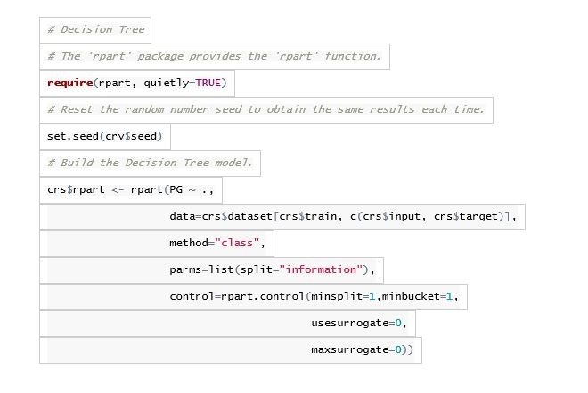
The code above in effect says take the paygrade (PG) as the dependent variable ( thing to be predicted) and run it against all the independent variables , for purposes of this tree. The variables of contact level, financial budget etc ( from previous blog article) are crs$input- which is the ’all other independent variables. I asked it to split even when there is one in a bucket or node. I won’t get into the details of the remainder of the parameters for purposes of this exercise because I am more interested in show the output. (Please note that parameters can be changed and will result in different outcomes each time you change them)
The decision tree generated looks something like this:
library(rpart.plot)prp(crs$rpart,main=“Decision Tree Jobclassinfo.xls $ PG”)
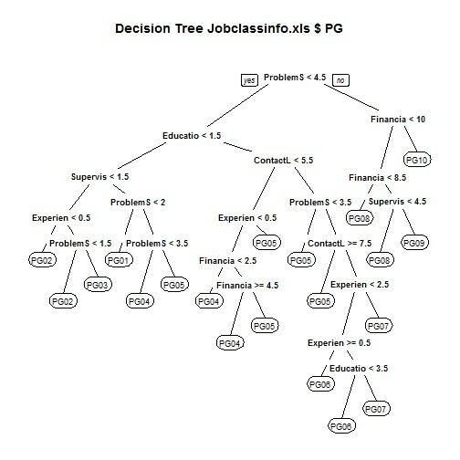
The root node is ProblemSolving <4.5. Each subsequent question is another node- and the terminal nodes are the ones that have the ‘PG’ categories where no further splits are occurring. These terminal nodes are the predictions based on the answers to the questions needed to get there. Note that the left split is always the ‘yes’ answer to the question and the right split is always the ‘no’ answer to the question.
Similar to linear discriminant analysis- you can prepare a confusion matrix to show the actual compared to the predicted:
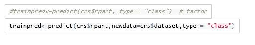
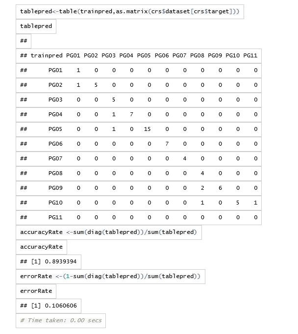
The accuracy rate is even higher than the linear discriminant analysis in this example. Please note again this is on ‘training’ data- the model predicting itself which is likely to be overly optimistic and overfitted.
The neat thing about decision trees is that the rules that are formed are completely understandable to explain and follow- even without knowing the mathematical/statistical rigor that is behind it.
Random Forests in R
As mentioned before, due to a single decision tree over fitting the data, random forests address this by creating hundreds of trees with various samplings from the population and average the results of the predictions from the trees. Because hundreds are generated, there is no way to meaningfully see the individual decision trees. However the summary results of the averaging can be seen in a confusion matrix:
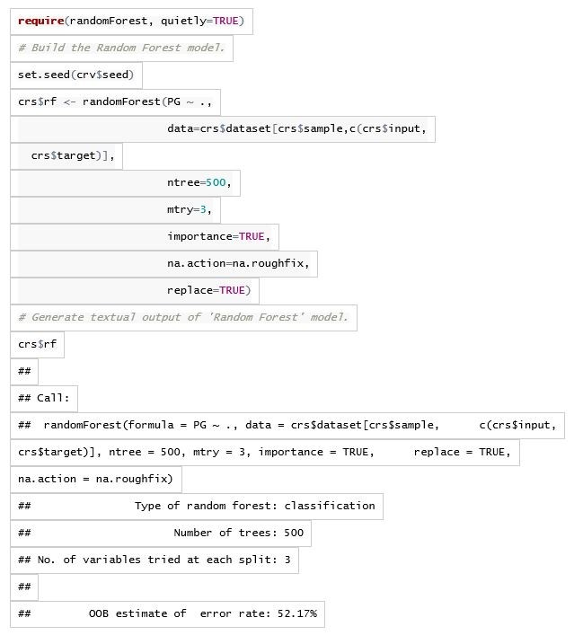
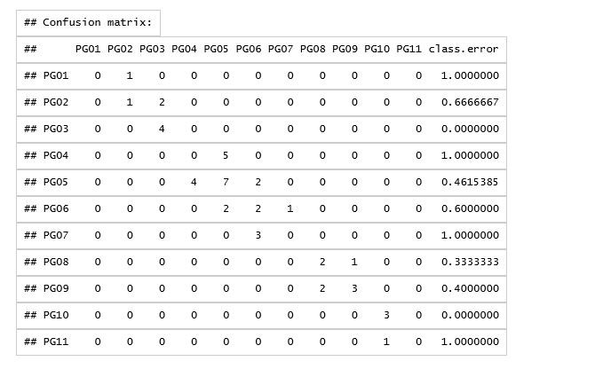In this case the OOB estimate of the error rate is 52.17%- an estimate likely closer to an accuracy on ‘test’ data then ‘training’ data. This random forest used only 3 variables at a time to predict (ie ## No. of variables tried at each split: 3). The decision tree example previously used all the variables initially.
The point of showing both the decision tree and random forest examples above was to show that there are more ‘classification’ algorithms out there in statistics that can be used AND that R as a ‘programming language’ is rich in its features to help you accomplish that. The catch is that you must be prepared to learn both statistics and R to understand what you are doing to benefit from R’s richness.
An immediate question you might ask is are the other ‘non-programming’ tools (tools that are more menu driven) that can be used to do some of this stuff? The quick answer to your question is ‘yes’. The caveat is that you still need to understand statistics, machine learning, statistical learning etc. at least at a basic level, to likely understand and know what you are doing.
Having said that, I would like to show a couple examples of menu driven (and in this case web based) tools that can be used for decision trees and random forests (and a whole lot more too). The first of these (for decision trees) is BigML. The second of these (for random forests) is Microsoft’s Azure Machine Learning
BigML
BigML can be found at:
BigML is a web based solution for predictive purposes. From what I have seen in experimenting with it, it makes extensive use of decision tree methodologies. So I decided to put my job classification data to it, to understand what it does and how it does it.
BigML requires you to:
Identify your data source Create your data set from the source Create a model Make predictions
Data Source
In this step you upload your data file to BigML.
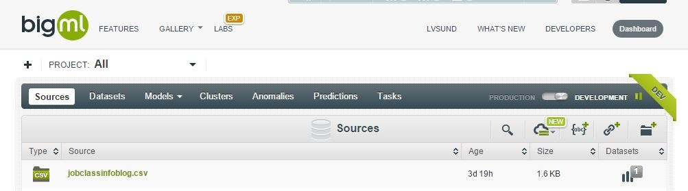
I have uploaded the CSV file
Dataset
Once the file is uploaded BigML can see its metadata and understand the fields. It assumes the last field is the thing you are trying to predict. In mine, the second field is what I am trying to predict so I tell it that. Notice I have the 7 predictor fields- education level through to financial budget.
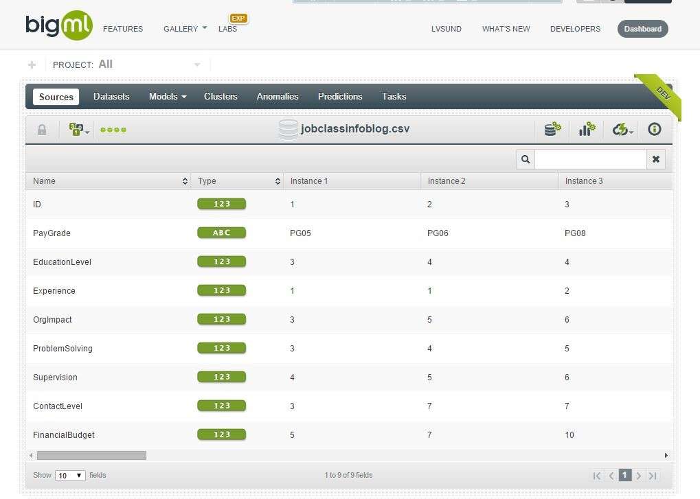
Model
The next step is to create the model. This is where you see the decision tree created. I have highlighted one of the paths:
It shows you the node rules to the right- for that path.
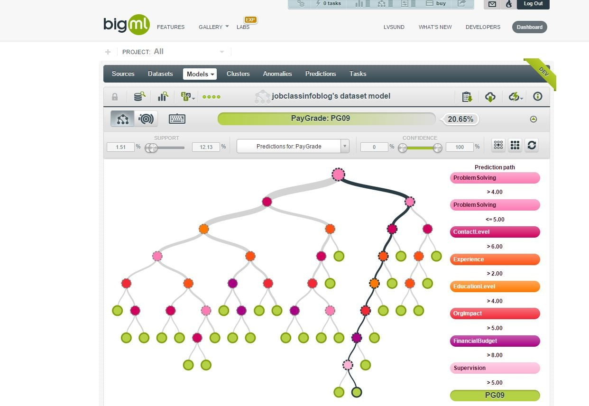Predict
The final step is to predict. It gives you a couple of options- but I will show just one:
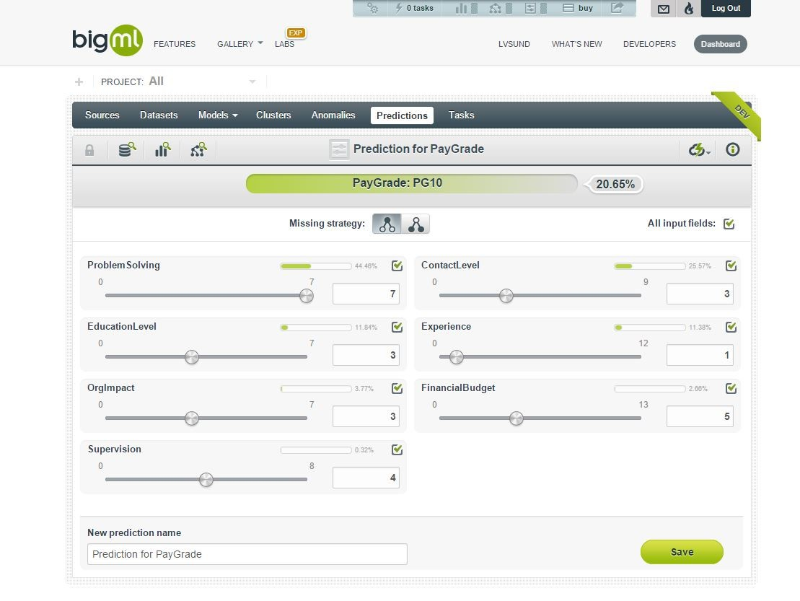At the top is the prediction. Below it are the settings for each of the predictors. What is supercool here is that you can vary the values on those predictors and the predicted category will change- in real time. Why is that cool? The predicted category only changes when the combination of values requires it to. One of the things I found for example was that the predictors can have a level of sensitivity/insensitivity. In other words problem solving could have a series of values that could be changed- for which there was no change in the predicted category (all other predictors held constant). This BigML web based graphical tool allows you to see that sensitivity- which might be difficult to do in other tools.
Finally with respect to the model- you can download a version of it to your computer in your favorite language. Examples include C#, VB Net, Excel and a number of others.
Other than taking a few minutes to familiarize myself with the BigML interface- once I did that it took me less than 10 minutes to have a working model that could predict- no code required.
Microsoft Azure Machine Learning
The final tool I want to show is a tool from Microsoft- in this case showing a random forest. Microsoft’s technology is also web based- like the previous tool. But Microsoft’s is also tied into Microsoft Azure. Why is this significant? There are probably many reasons- but the one I particularly paid attention to- was that after it has done its modelling- you can access that model in the cloud- from a variety of tools I think- but the one that was most direct and available was Excel. When you ‘publish’ your model- you can actually download a pre-created spreadsheet file that is fully linked up to and talks to the model you just created in the cloud. The significance of this is that if you give that spreadsheet to someone else- they too can use the same model and talk to it in the cloud to get the predictions based on data submitted on the spreadsheet.
Let’s take a quick look. It can be found at:
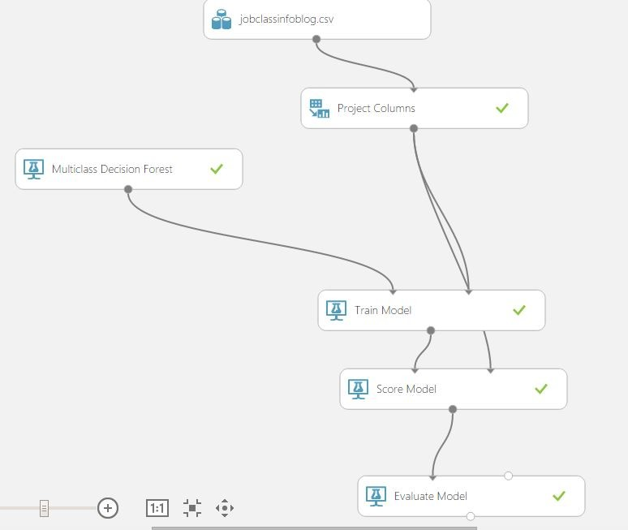You create your model as an ‘experiment’:
The model starts with uploading the csv file containing the data (jobclassinfoblog.csv).
The project columns step helps you tell this machine learning tool- what is to be predicted- and what the predictors are.
You choose what machine learning tool you want –in this case Multiclass Decision Forest.
You then tell it to train that tool on the datasource and dataset.
You then ask it to score the model.
Finally you evaluate its performance.
Once you have actually executed the model- for each of the steps above- the grey dot at the ‘tail’ of each arrow- when ‘right-clicked’ allows you to visualize information at that step.
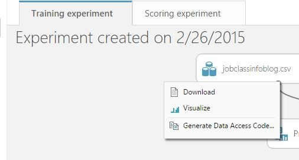Here are examples of the visualize for the data and the results
The Jobclass Data
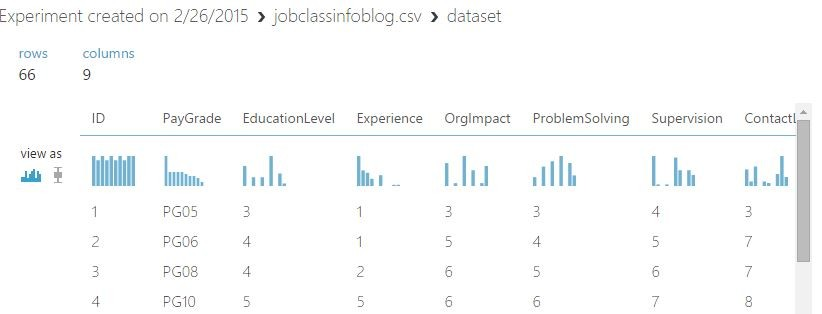The Evaluated Results
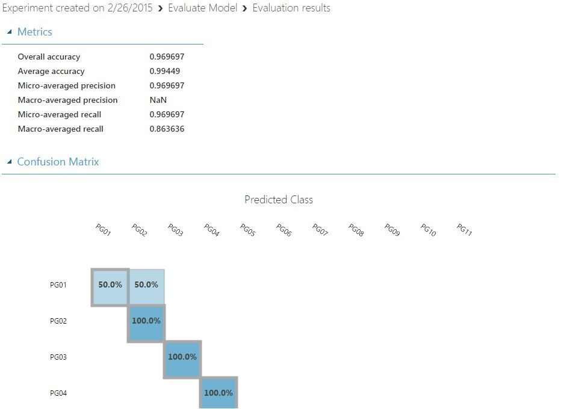
When you are ready to publish your model ( make it visible to yourself and others as a usable outcome, the Azure Machine learning tool provides you with an Excel spreadsheet where you can put in your values:
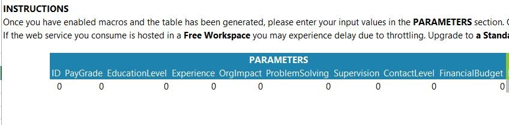It then shows you the predicted class:
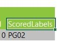
In the above, I actually haven’t entered any values.
I should also mention that even though Microsoft’s Azure Machine learning tool is cloud, web, and visually based- you can actually also include R scripts in the models you build. (There is a reason why R is popular as a statistical package).
While I have not shown anything from it, yet another graphic tool that can be used for data mining is RapidMiner found at
Conclusion
In the previous blog article I wrote, I showed how discriminant analysis in the R statistics software could be used as a tool for job classification by showing how it could ‘predict’ a classification based on the features of the job classification description in question.
This blog article further expanded on that by showing that additional statistical tools in R such as decision trees and random forests could be used as well. And I have shown that the ability to use some of these statistical algorithms can be done in tools other than R- that are web based and menu driven and require no programming.
The whole point here is that, as I indicated in the introduction, ‘data driven’ analytical approaches can be applied to traditional HR methodologies. There is this ‘whole other world’ of HR that exists out there- capable of being rigorous and providing insights into our data, that simple HR reporting can’t. But it does require HR practitioners to pick up better information technology and statistical skills to obtain the benefits of it. I picked job classification from HR as an example to illustrate, but machine learning/predictive modelling can probably be used in ways that are only limited by the imagination.
In an upcoming blog article I will talk about how ‘data driven’ can be applied to HR Operations.